本記事は、インスペクターのユーザーインターフェイスの主要部を紹介するクイックツアーです。
ここでは、インスペクターの UI に存在する 3 つの最上位コンポーネントを扱います。
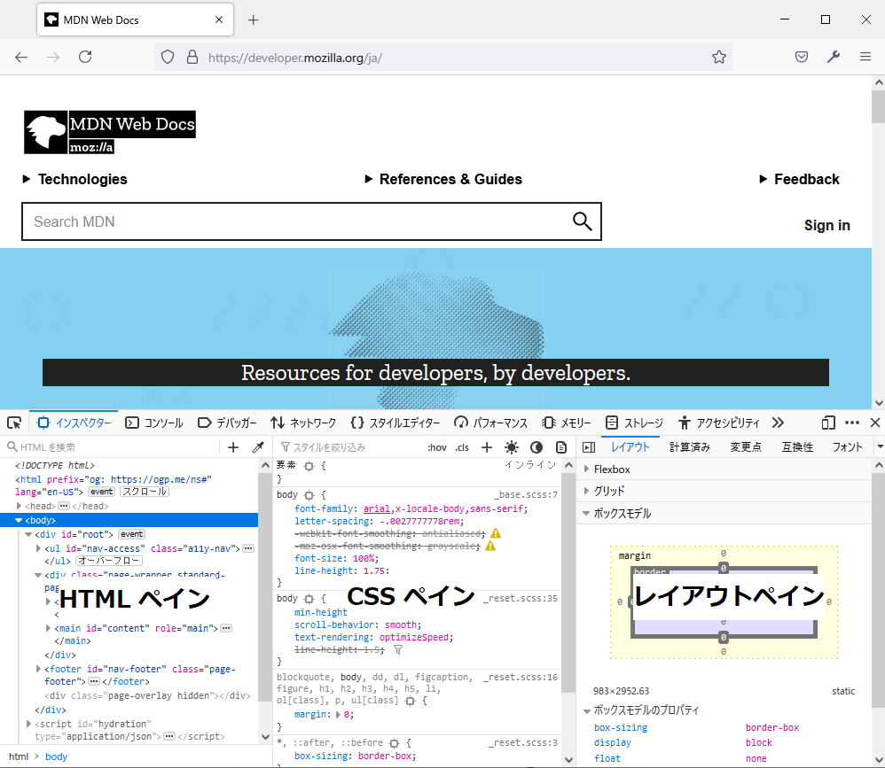本ガイドは、あえて可能な限り簡潔にします。そしてインスペクターの使い方を詳しく説明する、さまざまなハウツーガイドへリンクします。
インスペクターは、選択中の要素に関する詳細情報を提供します。要素選択ボタンは、調査する要素を選択する手段のひとつです。
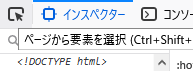
このボタンは、実際には ツールボックスのツールバー の一部ですので、インスペクター以外のツールからでも即座にアクセスできます。
要素の選択方法については、要素の選択 のガイドをご覧ください。
インスペクターは設定に応じて、 2 または 3 枚の部分に分かれています。インスペクターを 3 ペイン表示するかどうかを切り替えることができます。次の画像は 2 ペインレイアウトを表しています。
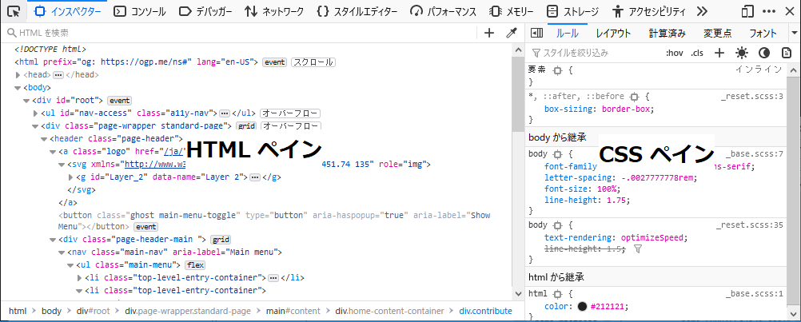
2 ペインモードでは、インスペクターには HTML ペインと、 6 つのツールが入る CSS ペインが入ります。
以下の画像は 3 ペインモード (Firefox 62 以降で利用可能) を表しており、 CSS ルールビューがインスペクター中央の独立したペインに入ります。以下の画像は 3 ペインモードを表しています。
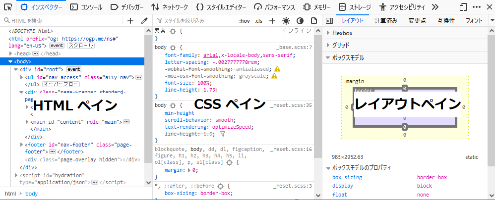
ご覧の通り、 CSS ペインがインスペクターの中央に移動しました。 HTML ペインの構造について詳しくは、HTML の調査と編集 のガイドを参照してください。
ルールビューには、選択された要素に適用されているすべてのルールの一覧を、最も詳細度が高いものから最も詳細度が低いものの順で表示します。上記を見てください。
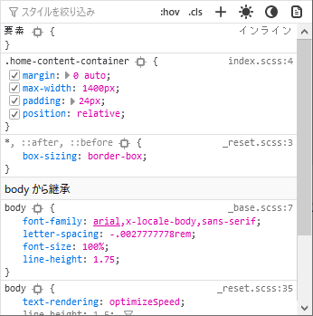
詳しくは CSS の調査と編集 をご覧ください。
レイアウトビューには、そのページのボックスモデルが表示されます。ページにフレックスボックス表示モデルまたは CSS グリッドを使用している部分がある場合、このビューにはそのページで使用されているフレックスボックスまたはグリッドの設定が表示されます。
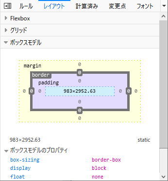
レイアウトビューについての詳細は、ボックスモデルの調査と編集を参照してください。なお、 Firefox 50 より前では、ボックスモデルビューは [レイアウトビュー] タブの中ではなく、独自のタブに表示されていました。
ルールビュー内で編集を行った場合、変更点ビューで行った変更を確認することができます。
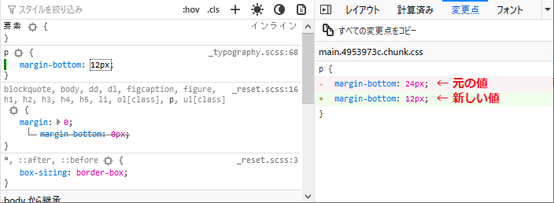
計算済みビューでは選択した要素について、各 CSS 属性の計算済みの値と、要素のボックスモデルを編集可能な形で視覚化したものを表示します。
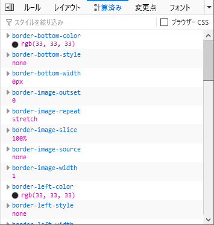
このビューに表示される CSS 宣言について詳しくは、計算済み CSS の調査をご覧ください。
Firefox Developer Edition バージョン 77 より、互換性ビューには選択した要素や現在のページ全体に適用されているプロパティについて、CSS の互換性に関する問題があればそれを表示します。プロパティに対応しているブラウザーにはアイコンが表示され、実験的または非推奨のプロパティには注意を表示します。
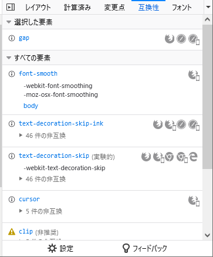
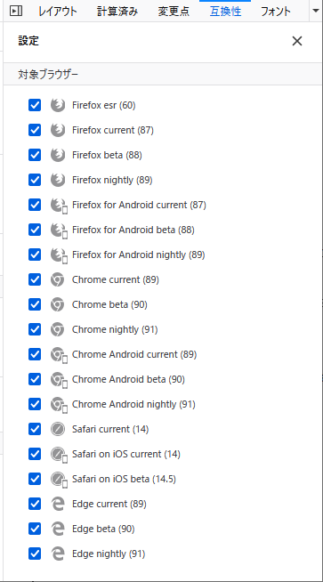
関心のないブラウザーのチェックボックスを外してください。新しいバージョンのブラウザーがリリースされると、この一覧のバージョン番号が更新されます。
フォントビューでは、ページ内で使用しているすべてのフォントを、編集可能なサンプルを使用して表示します。
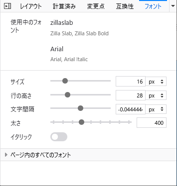
詳しくはフォントの編集を参照してください。
アニメーションビューでは、選択した要素に適用されているアニメーションの詳細情報を表示します。また、アニメーションを一時停止する機能もあります。
詳しくは アニメーションを扱う をご覧ください。